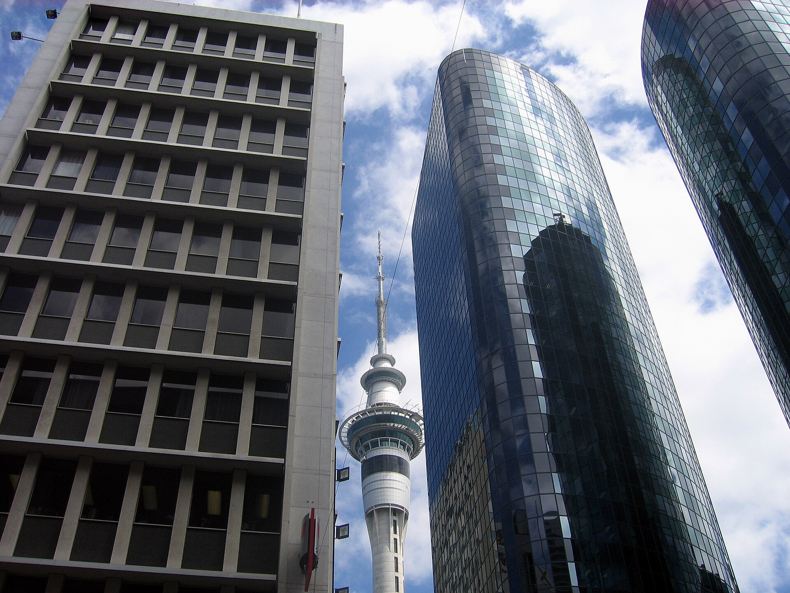
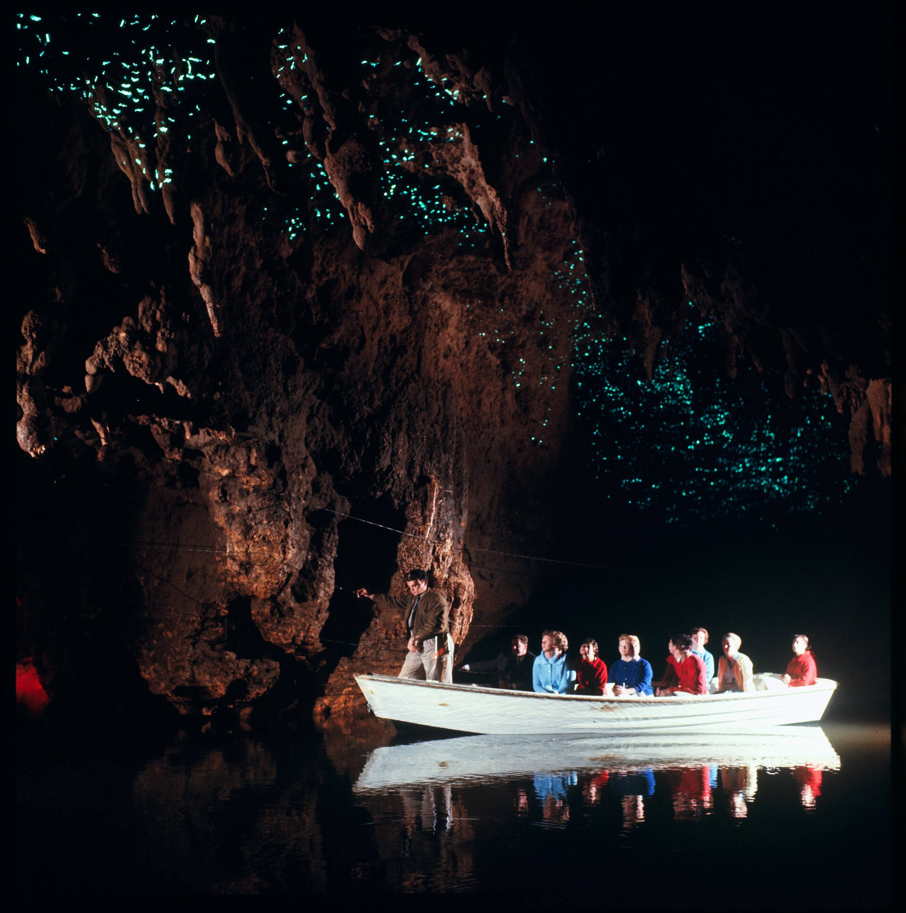
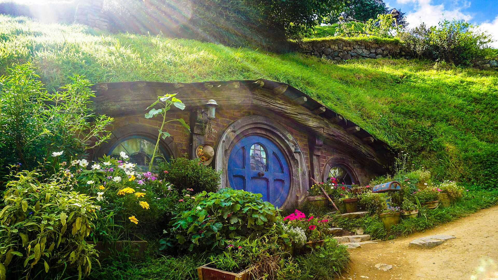
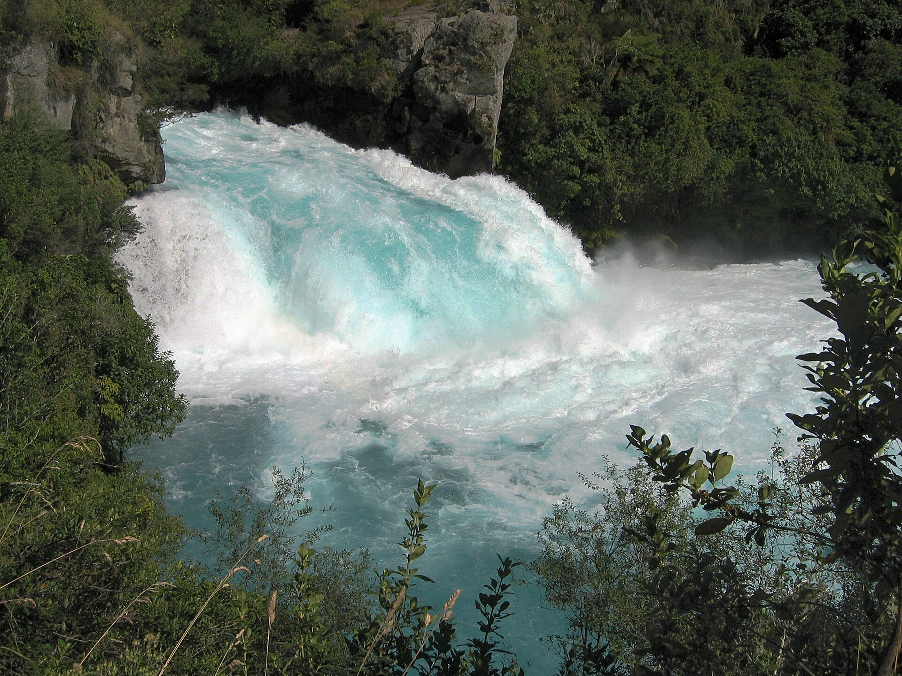
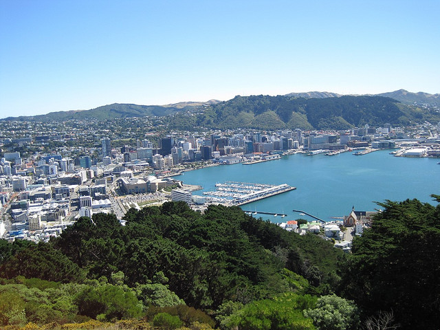
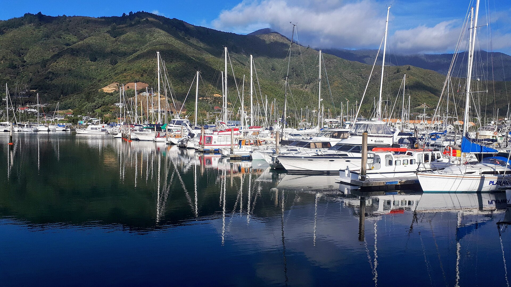
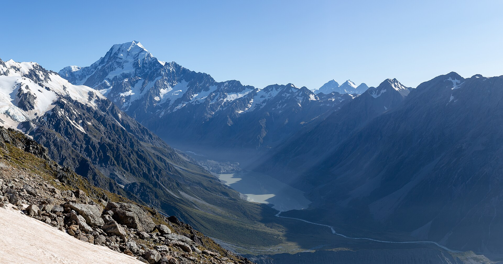
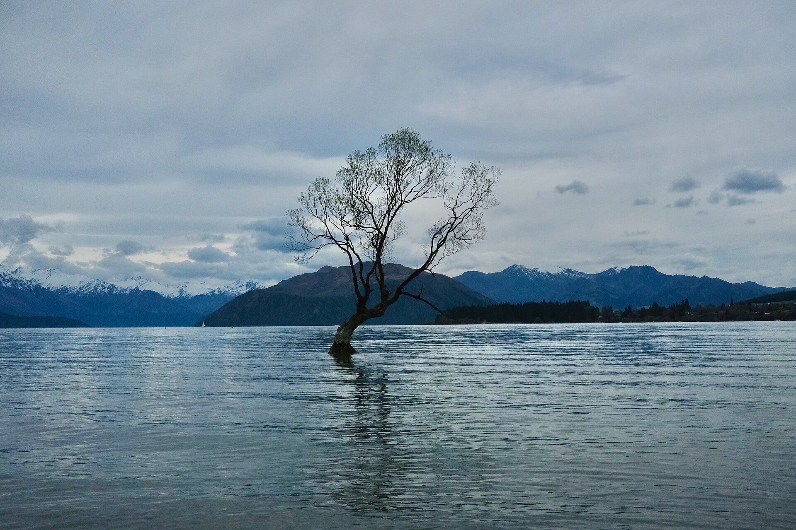
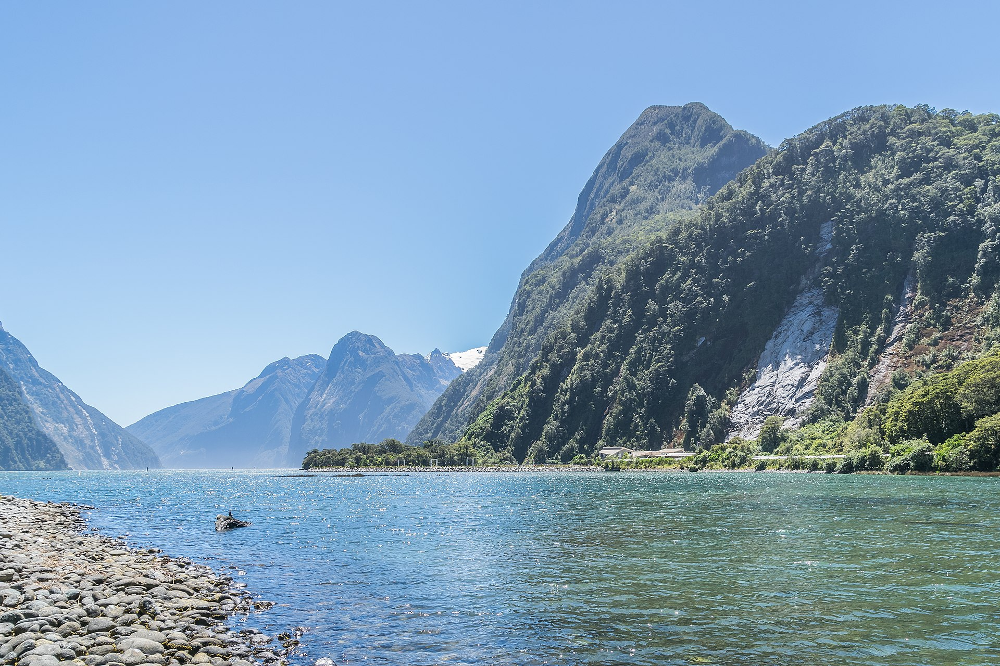
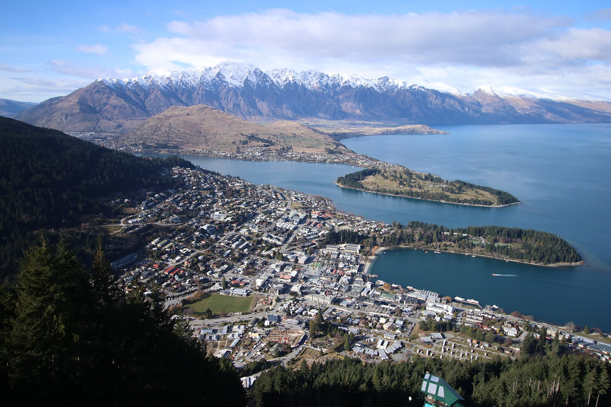

Auckland
The isthmus city sits between two harbours, on a field of volcanic cones. It is the usual gateway, a dense Māori and Pacific city, and the contrast before Coromandel’s empty coves.
Whenua
Not a pretty checklist. Hamilton is your four night base. Nelson is the South Island landing. Queenstown gets three full days.

The isthmus city sits between two harbours, on a field of volcanic cones. It is the usual gateway, a dense Māori and Pacific city, and the contrast before Coromandel’s empty coves.

The archway beach is the Coromandel’s postcard for a reason: volcanic rock carved into a nave you walk through at low-to-mid tide. Nearby, Hot Water Beach lets you dig a spa where geothermal water meets the Pacific, unique even in a geothermal country.

Hamilton sits between Auckland, Waitomo, and Hobbiton. Four nights means you are not unpacking every day. Hamilton Gardens is the city attraction. The rest of the Waikato is done as day trips.

Arachnocampa luminosa larvae light the limestone like a reverse night sky. Waitomo is the accessible, world-famous place to see that biology not a theme-park trick.

Peter Jackson’s Shire stayed standing in a Waikato farm. It matters because it is how millions first pictured Aotearoa and because the landscape really is that green. Go for the craft of the set, not only the films.

Rotorua is the country’s geothermal heart and a centre of Te Arawa. Champagne Pool’s orange silica rim, mud, and steam are the earth with the lid off. Te Puia and a cultural village evening are where carving, weaving, and hāngi sit beside the science.

Lake Taupō fills a supervolcano caldera the largest lake in Aotearoa. Huka Falls is the Waikato squeezed through a narrow rock chute: short stop, huge volume, a reminder this island is still restless.

The compact capital punches above its size: Te Papa’s national stories, Parliament, a cable car into the Botanic Garden, and Mt Victoria’s harbour lookout (and a famous LOTR ridge). Wind is not a rumour.

Crossing Raukawa / Cook Strait is part of the national geography lesson. You leave the North Island by ship, thread the Marlborough Sounds, and step onto a different island’s light and weather. Book the ferry with the car.
Nelson is the sunny top of the South Island: cafés, Tahunanui Beach, and the gateway to Abel Tasman. Stay the night after the ferry, enjoy a morning in town, then turn south to Kaikōura. Book a water taxi if you want even a short Abel Tasman walk.

A deep ocean trench sits close to shore, so sperm whales, dolphins, and seals feed almost in town. The peninsula walk is where mountains drop into the Pacific after the 2016 earthquake, the raised seabed is still part of the story.

Glacial flour turns the lake a milky turquoise. The tiny Church of the Good Shepherd frames the Southern Alps. At night, the Mackenzie Basin is an International Dark Sky Reserve, one of the best stargazing sites on Earth.

The highest peak in Aotearoa, and an ancestor in Ngāi Tahu tradition. The Hooker Valley Track is the rare alpine walk that delivers glacier views on a well-built path. Lake Pukaki’s blue on the approach is not a filter.

A quieter southern lake town than Queenstown, with the famous lakeside willow. It is a breath between Aoraki and the Fiordland day still mountains, softer pace.

A drowned glacial valley, not a “sound”. Mitre Peak, hanging valleys, and waterfalls that thicken in rain. The cruise is the way most people understand Fiordland’s scale; Mirror Lakes and The Chasm on the road in are the prelude.

Three days in Tāhuna / Queenstown: town and gondola on day one, Milford Sound on day two, Glenorchy and Paradise on day three. Book the cruise, gondola peak slots, and the Lord of the Rings tour.